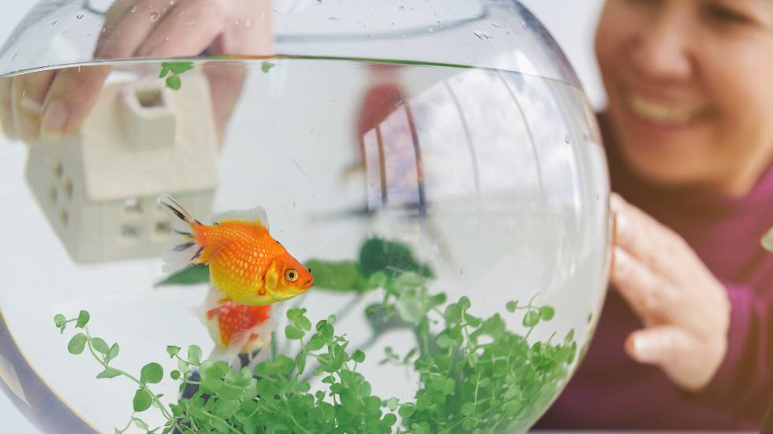

Published on April 5, 2025
Creating a clean, safe, and enriching habitat is essential for the health and happiness of your aquatic pets. A well-maintained aquarium reduces stress, prevents diseases, and allows your fish or aquatic species to thrive.
Start with choosing the right tank size. Bigger is usually better—it provides more stable water parameters and more room for your pets to swim and explore. Research the specific needs of your species to select an appropriate setup.
Next, install essential equipment. This typically includes a reliable filter, heater (if you're keeping tropical fish), and a thermometer. Lighting should match your pet's natural environment and be on a timer to mimic day-night cycles.
Add a substrate (gravel, sand, or bare bottom depending on species), decorations, and live or artificial plants. These provide hiding places and enrich your pet’s environment—but make sure all items are safe for aquariums and free from sharp edges.
Before introducing any pets, **cycle** your tank. This means establishing beneficial bacteria that break down waste. It usually takes 3–6 weeks. Use water test kits to monitor ammonia, nitrite, and nitrate levels during this process.
Once your tank is fully cycled, introduce your aquatic pets gradually. Monitor their behavior and water parameters regularly. Perform partial water changes (20–30%) weekly to maintain water quality.
Tip: Quarantine new fish before adding them to your main tank to avoid spreading diseases to your established community!